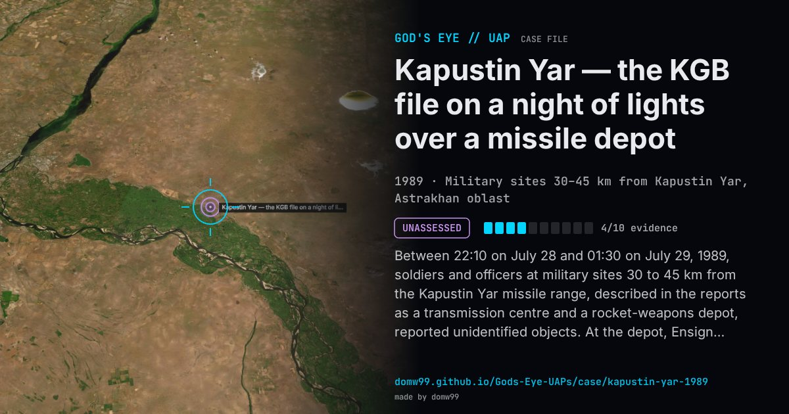

Kapustin Yar — the KGB file on a night of lights over a missile depot

Between 22:10 on July 28 and 01:30 on July 29, 1989, soldiers and officers at military sites 30 to 45 km from the Kapustin Yar missile range, described in the reports as a transmission centre and a rocket-weapons depot, reported unidentified objects. At the depot, Ensign Valery Voloshin and a private watched through binoculars for about two hours as a disc some 4–5 m across with a dome, glowing a dim phosphorescent green, hovered 20 to 70 m above the warehouses, flashed a bright light and swept a beam, moved silently in sudden jerks, and finally left towards Akhtubinsk. Other officers described flashes like electric welding, a “flying plate” or a cigar-shaped object, and an aircraft was said to have been sent up but kept at a distance. The written statements, with unit names blacked out, were among 124 pages of military and civilian reports that the KGB passed in October 1991 to Pavel Popovich, president of a Soviet ufological association; Komsomolskaya Pravda published them in 2003. They are first-hand military reports, but nothing shows that anyone examined them.
Explanation
The reports are in a package of 124 pages that the KGB sent to the cosmonaut Pavel Popovich in October 1991, with a covering letter saying that the KGB did not study UFO reports but passed on what it received. No investigation or conclusion accompanies them, and the original file was later said to have gone missing.
What was seen
Shape: A disc 4–5 m across with a dome, glowing dim green, with a bright flashing light and a beam
Witnesses: Officers and soldiers of military units near Kapustin Yar, among them Ensign V. N. Voloshin, Capt. Chernikov and Sr Lt Klimenko
Duration: About three and a half hours
Sources
Browse
- Russia
- 1980s
- Unassessed
- Military encounters
- Official government documents
- Many independent witnesses
- Military witnesses
- Lights and fireballs
- Discs and saucers